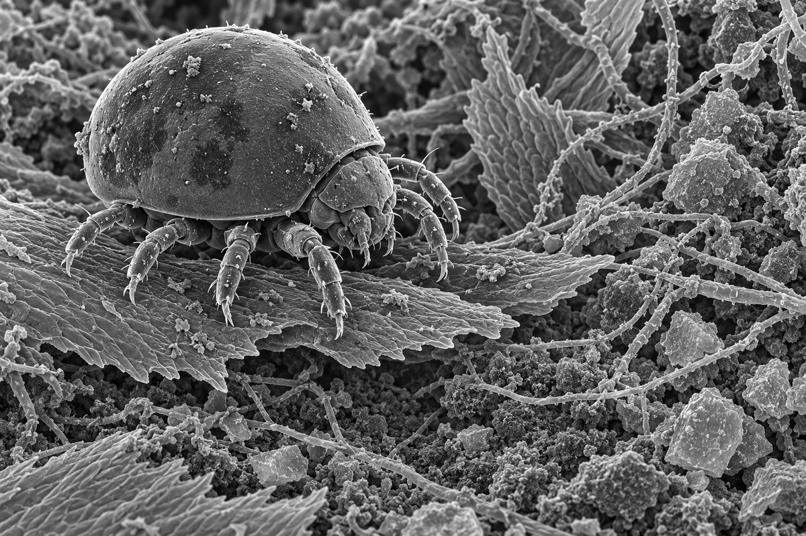

Mite card (SEM)
The Mite card on the prototypes page.


Generation prompt
Use case: scientific-educational. Asset type: individual finished game launcher illustration. The supplied images are references only, not edit targets. The first 3 images are real organism/habitat references: mite, moss, tardigrade-sem. The final image is an AI concept board for mood only, never anatomy. Do not copy any labels, scale bars, figure panels or text from the references. Landscape key art for a scientific microscopy game prototype, 3:2. Leave the lower third calm and fairly even so a title can sit over it. Scanning-electron-microscope look: greyscale secondary-electron image, bright edges where surfaces tilt away from the detector, soft dark crevices, very deep focus, crisp tactile surface detail, slight fine grain, no colour. An armoured oribatid moss mite (box-mite, family Phthiracaridae: a smooth domed notogaster about 0.6 mm long, eight short jointed legs, a hinged prodorsum, a few stiff setae) walking over a dry moss leaf edge among fungal hyphae and angular mineral grains, three-quarter view from slightly above, the mite in the left half of the frame. Exactly eight legs, each with five visible segments and a single claw. Scientifically grounded: match real microscopy of the named organisms and habitat, with correct anatomy and believable scale. No fantasy creatures, no faces, no glowing magic, no text, no labels, no scale bars, no watermark, no UI. Output a single complete image, exactly 1200 by 800 pixels, not a contact sheet. Keep scientifically grounded morphology and use optical style rather than a conventional fantasy painting. For legged animals, no extra limbs: eight limbs means four left-right pairs total.